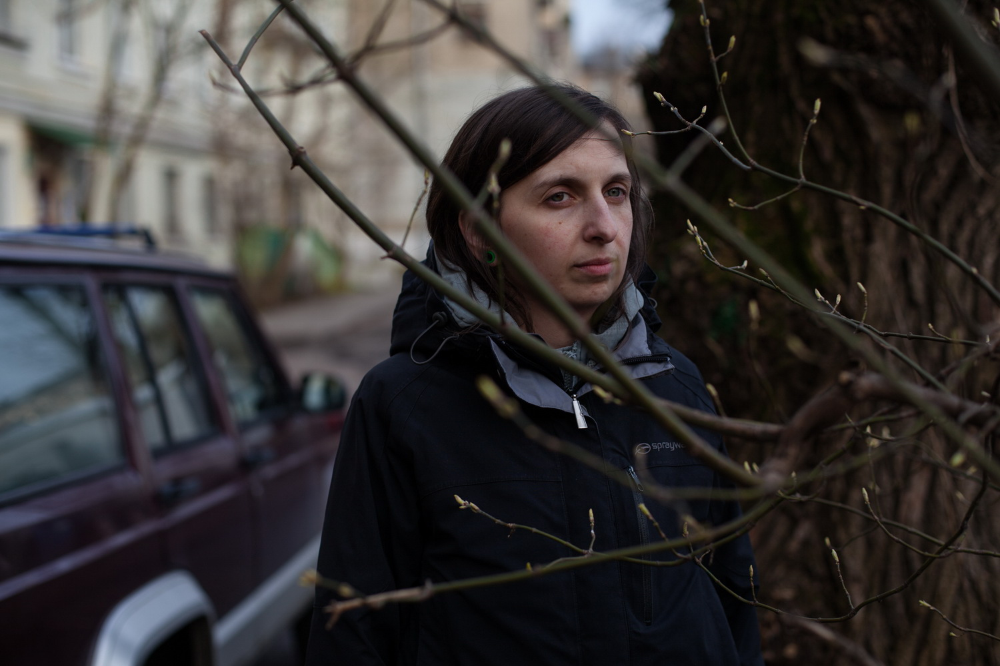
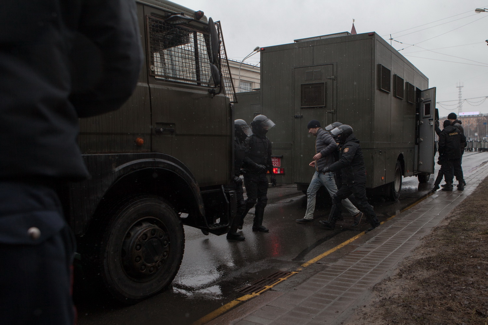
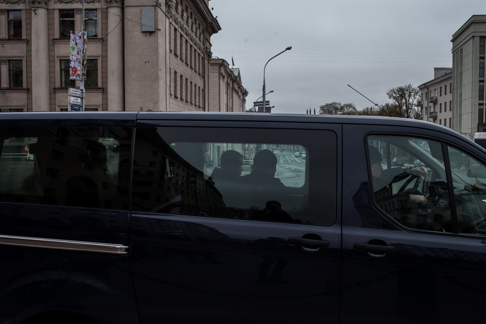
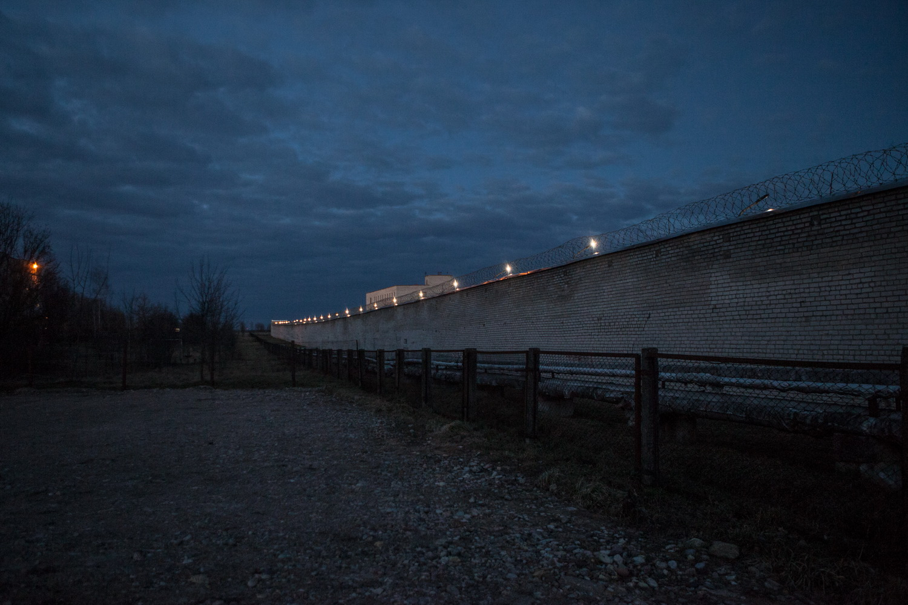

The first (and most massive) protest named "Angry Belarusians’ March" against the tax on parasitism was held in Minsk on February 17. 2500 participants marched from Oktyabrskaya Square to the building of the Ministry of Taxes and Duties.
February 17, 2017, Minsk, Belarus.-
Cold Spring
2017
-

-

«I do not know why I decided to do this (a hunger strike). Probably I was rebelling against the fact of how smoothly and well-coordinated everything was going on: detention, registration in the police office, the court. They did not shout, did not demand anything, did not swear. This conveyor really made me mad. I wanted somehow to change the situation.
It was scary when several people were randomly taken from their cells and accompanied god knows where, and then you stand facing the wall, with your hands behind your back and hear "Open our mouth, we need to collect your saliva." And you do not understand what it is. This is how genetic analysis samples are collected. But explanation at all. I began to think quickly, but while I was thinking (I was the fourth in the line), they had already done it with two girls. Addressing those who remained, I said, "No way, you are free not to do it!" Such a type of sample can be taken from anyone, but everyone also has the right to refuse.»
Alyona Dubovik (32), eco-activist, 12 days of arrest. Together with more than 50 participants Alyona was detained on March, 15, on a trolley-bus she was riding after the end of the protest authorized by the local authorities.
In court, she went on a hunger strike which resulted in her losing 5.2 kilograms. The first examination by a doctor took place only on the 10th day of her staying in prison. The video of the violent detention of activists and casual passengers of the trolley-bus was viewed more than 90,000 times.
April 1, 2017, Мinsk, Belarus. -

The detention of the participants of the demonstration "Freedom Day", traditionally organized by the opposition on March, 25. The action was harshly dispersed by numerous militia and special forces. More than 700 people were detained, 149 were arrested and fined. March 25, 2017, Minsk, Belarus.
March 25, 2017, Minsk, Belarus. -

The anarchists group during the protest on February 17 carries a poster "The parasites of all the countries, unite." After the action, police officers in civilian clothes tried to detain the activists, but they managed to leave by public transport.
February 17, 2017, Minsk, Belarus. -

The riot policemen detain a participant of the demonstration "Freedom Day".
March 25, 2017, Minsk, Belarus. -

Law enforcement officers in civilian clothes follow the column of protesters on “Labor Day” of May, 1. In the course of the protests, secret detentions of political activists by police in civilian clothes on cars without numbers were widely common.
May 1, 2017, Minsk, Belarus. -

«For a couple of years it was quiet here, there was a hope that everything would come to its senses, that the situation would change. After the arrest, I had a feeling of inevitability. The wheels swirled, and whatever you do, there is no law, we are out of it, it became a decoration. You understand that you have become a toy in the hands of the power system and it is not clear what it actually has in mind – to let you go or to come up with a new punishment.
If you do not go into politics, it goes to you. Most of those detained on March, 25 were random people. My friend was going to a meet his friend for a beer, they were not going to take part in the rally.
Why is this all? What have you proven and to whom? Was there anyone who knew nothing about you? You wanted to hear the citizens and here they came expressing their protest. Why are you then meeting them with water jets? They carry no stones with them, no bottles with a "Molotov cocktail". Join the dialogue, talk to people.
It is impossible to hide one’s discontent, crisis and conflict under the blanket. Everyone is going to feel bad when it gets revealed. And it makes me very sad».
Arseny Konopljov, 36, artisan, was detained when he was leaving the metro near the venue of the rally on March, 15. He was arrested on 13 days.
-

People are trying to help an elderly woman get up. She was accidentally knocked down by OMON officers during the detention of the protesters during "Freedom Day".
March 25, 2017, Minsk, Belarus. -

The car of the activist Dmitry Dashkevich, who was detained on March, 22, on the eve of the protest action on "Freedom Day" by police in civilian clothes.
March 22, 2017, Minsk, Belarus.
Dmitry is one of 35 defendants in the White Legion case - a criminal case on the preparation of mass riots. Opposition calls this criminal case a fake in order to suppress protests. At the time of publication, Dmitry Dashkevich was under a written undertaking not to leave the place. -

On the morning of March 25, the patrol and guard service, OMON, special forces, internal troops are traffic police were gathered in the center of Minsk, as well as such machinery as a few dozen of paddy wagons, buses, water cannons, assault vehicles and armored cars.
March 25, 2017, Minsk, Belarus. -

The Center for Isolation of Offenders and the Temporary Detention Facility at Okrestina Street in Minsk are the places where administratively detained people are held. Almost all the incoming and outgoing letters of detainees in the course of protest actions are confiscated by the administration of the Center.
March 17, 2017, Minsk, Belarus. -

Friends and relatives of the activists detained on March, 15 are queueing to give the detainees food, books and hygiene items. Six detainees took part in a hunger strike, but the administration of the Center for Isolation of Offenders ignored this fact.
March 17, 2017, Minsk, Belarus. -

«There is a nightmare happening in your life: you are detained, injustice occurs - the brain, as a protective reaction, begins to worry about practical things, medicines and something like that.
My sister was also detained and her first letter was full of instructions about what flowers at her place should be watered, who to contact at her work. It may look strange, and you might want to get some emotions, you want a person to write "My dear family, do not worry", but with the help of such instructions, as it seems to me, we are protecting ourselves from shocks and stress.
To be honest, in the next few months I would not want this experience to repeat. One time is quite painless for health and for work, school or something else. But if they decide to put me in prison again, then it might be much more harmful and for the psyche, as well. I would not say loud phrases claiming that I am not afraid of anything and will go out to the end and that I have nothing to lose.
Now I have more emotions, empathy, support, the sense of community and understanding, what is really important, and what is senseless, imaginary problems. Being on this wave, you can make plans, come up with projects, understand something, tell people what is probably hard to say in usual situations, because sense get sharpened».
Lena Nemik, 31, illustrator, was arrested on March, 15th. Together with more than 50 participants of the protest authorized by the authorities, who were travelling by a trolley-bus after it was over.
Through the fault of the staff of the Center for Isolation of Offenders, she missed her daily intake of medications for a thyroid disease. She managed to get the permission to take her tablets only after the trial. She was detained for 13 days. -

Surveillance camera view from the office of human rights center "Viasna". On the eve of the action on "Freedom day", more than 58 observers of "Viasna" were detained by OMON officers and released after a few hours, after the rally was over.
March 28, 2017, Minsk, Belarus. -

Employees of the human rights center "Viasna" conduct questioning of people released after the arrests and provide them with legal advice.
April 18, 2017, Minsk, Belarus. -

Prison No. 8 in the city of Zhodino, where the protesters who were detained on the eve of March 25 were transported. After being released, the detainees complained of cold cells and the absence of warm water.
March 27, 2017, Zhodino, Belarus. -

Police officers after the detention of one of the participants of the March 25 protest in Minsk.
March 25, 2017, Minsk, Belarus. -

« They tried to exert psychological pressure on me: every day I was transferred to a new cell. I was not taken out for a walk for 5 days in total, 9 days without taking a shower. Every morning we gave them a pile of complaints.
When I was transferred to another cell, they took me there, completely undressed me and then made me squat. You are in a room, there is a cage, a table, cameras and a woman in uniform standing in front of you when you are getting undressed. "Squat!". One feels the hierarchy. She has power, she dominates you, and you have to do all she says, because you are arrested. It's a common practice, they check everyone like this. But then I found out that not everyone.
People used to think that only those who break the rules get to prison. Now they see that yesterday it happened to strangers whom they could consider criminals, and now it can happen to their sons, daughters, even to parents. Today they arrest a neighbor - and tomorrow in his place you can find yourself.
The decree was only an excuse, an incentive to voice all the problems that exist in the society. The decree will end – others will take its place. If the regime is against its own people, the people always win ».
Marina Nosenko, 22, an activist, was preventively arrested on 12 days before the protest on "Freedom day" when going out of her house, when she was carrying a parcel for a detained friend Vyacheslav Kosinerov.
-

Relatives and friends greet the detainees after the protest of the March, 15. On the eve of "Freedom day", most of the prisoners were taken to prison in Zhodino in order to make room for new detainees.
March 27, 2017, Zhodino, Belarus. -

« One can not rely on one day, and then be severely disappointed - the opposition leaders has already stepped on these rakes. In one day there can not happen a sudden revolution, after which we will wake up in democratic Belarus.
We must understand that the struggle for one's rights is a long process and one must set realistic goals. As a result of the fact that the opposition presented the March 25th as a "judgment day" in which everything will be decided and the revolution will take place, the authorities themselves became frightened and began to make sharp movements, giving a damn on relations with Europe. And in the end this intimidation worked. Therefore, on March 25, few people came out - they were resolute, courageous, best people of Belarus. But there were too few of them. The police had a multiple numerical superiority ».
Nikolay Dedok, 28, anarchist, 10 days of arrest.
Nikolay was arrested on March 25. During the transportation to the police department, on the bus, he was strucked several times by a policeman. Nikolai received a closed craniocerebral injury and stayed for 4 days in hospital under escort. Then he was arrested for 10 days.
May 11, 2017, Kaunas, Lithuania. -

Police officers escort the detainees during a protest on March, 25 to the Sovetsky district court.
March 27, 2017, Minsk, Belarus. -

« You are just staying at home: 12 o’clock, one pm, two pm, and you are following what is going on, how people are grabbed, at first just people, then journalists are starting to be detained. You start feeling ill at ease, but you seem to have the advantage: you are sitting “hidden” at your own place, with a closed door and everything seems to be normal.
At first they knocked, not too loudly, then it was an insistent and very loud knock. You felt you were in danger, you understood that you were alone at home and you could expect no support or protection from anywhere to come. Neighbors could also be standing at the door and looking at you in the peephole, but no one would help you in any way, even if friends came, it would not save you in any way.
I went to the door, looked in the peephole, saw a man in civilian clothes and did not even ask anything, it was clear to me, I opened a bit the inner door, the dog was barking. I had some time to warn a maximum number of people about what was going on so that they could know that I would most likely be detained.
This strange feeling of fear, fear which cannot be explained. Yes, I saw that many people were detained, I saw people being beaten, but why does this fear appear? You are sort of prepared, you know, where you live, you know that this can happen, but still you are afraid. When they began breaking the door, I realized that it would not end up with the fact that they would turned off the light or knock and leave, while I would pretend that there was no one at home. They purposefully came here and would not give it up ».
Marina Kostylianchenko, 30, is a journalist, was arested for 15 days at home on the evening of March 25, after a protest of "Freedom day", in which she did not take part. The door of her apartment was broken and an inspection for the presence of weapons and explosives was conducted in the apartment. During the hearing, the judge dismissed all the defense motions.
-

The smeared inscription "We do not believe, we are not afraid, we are not silent." # 5 days" in support of Oleg Larichev, the coordinator of street art community Signal, convicted on April, 26 for 5 days of arrest. Prior to this, on April, 4, Larichev was beaten by unknown people when entering his own house.
During the protests in Minsk, a number of sharply social and political graffiti and posters appeared: the stickers of "green men", posters with portraits of the ex-head of the Minister of Labor and Social Protection of Marianna Shchetkina, the Interior Minister Igor Shunevich, the OMON commander Dmitry Balaba, the chairman of Belteleradiocompany Gennady Davydko. Their authors are unknown. May 1, 2017, Minsk, Belarus.
May 1, 2017, Minsk, Belarus.